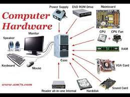

Courses for the semester
HARDWARE TECHNOLOGY
Hardware (H/W), in the context of technology, refers to the physical elements that make up a computer or electronic system and everything else involved that is physically tangible. This includes the monitor, hard drive, memory and the CPU. Hardware works hand-in-hand with firmware and software to make a computer function. Although the same core components are shared between desktop computers and laptops, their characteristics and design differ for a multitude of reasons (size, heat dissipation capabilities, power requirements, etc.). However, hardware is always necessary to run the critical software that makes computers work. OR Hardware Technology means the modified PDA sleeve for all Compaq iPAQ PDAs that are compatible with the CompactFlash Expansion Pack for the iPAQ 3800, 3900, 5100 and 5500 series, including, but not limited to all circuitry, design, manufacturing know-how and related intellectual property that provides amplified sound output from a PDA running the Say-it! SAM software or other sound-generating software. Nothing in this Agreement shall preclude Buyer from developing its own hardware technology to replace the Hardware Technology being acquired from Seller.
INTRODUCTION TO PHP

Stands for "PHP: Hypertext Preprocessor," a recursive acronym. PHP is a scripting language web developers use to create dynamic websites. It is often installed by default on Apache web servers, alongside MySQL as part of a "LAMP" configuration. When a website visitor accesses a PHP page, the web server processes, or "parses," the PHP code, which can output HTML to the webpage. In the example below, the PHP function gets the local time and date from the server and inserts it into the HTML. (The PHP code starts and ends with the tags. "F d, Y" formats the date as December 31, 2021.)
The current date is
PHP scripts can range from simple one-line commands to complex functions. Some PHP-based websites generate nearly all webpage content dynamically using a series of PHP scripts. While early versions of PHP were not object-oriented langauge, PHP3 introduced support for classes, including object attributes and methods. Developers can create custom object libraries and import them into various PHP pages, similar to a compilied language.SOFTWARE ENGINEERING

Software engineering is defined as a process of analyzing user requirements and then designing, building, and testing software application which will satisfy those requirements. Let’s look at the various definitions of software engineering: IEEE, in its standard 610.12-1990, defines software engineering as the application of a systematic, disciplined, which is a computable approach for the development, operation, and maintenance of software. Fritz Bauer defined it as ‘the establishment and used standard engineering principles. It helps you to obtain, economically, software which is reliable and works efficiently on the real machines’. Boehm defines software engineering, which involves, ‘the practical application of scientific knowledge to the creative design and building of computer programs. It also includes associated documentation needed for developing, operating, and maintaining them. Software engineering is a systematic engineering approach to software development.[1][2][3] A software engineer is a person who applies the principles of software engineering to design, develop, maintain, test, and evaluate computer software. The term programmer is sometimes used as a synonym, but may also lack connotations of engineering education or skills. Engineering techniques are used to inform the software development process which involves the definition, implementation, assessment, measurement, management, change, and improvement of the software life cycle process itself. It heavily uses software configuration management[1][4] which is about systematically controlling changes to the configuration, and maintaining the integrity and traceability of the configuration and code throughout the system life cycle.
WEBSITE TECHNOLOGY

Web technologies refers to the way computers/devices communicate with each other using mark up languages. It invo It is communication across the web, and create, deliver or manage web content using hypertext markup language (HTML). A web page is a web document which is written in in HTML (hypertext markup language) It is said to have brought the world into a small village where people and devices can communicate to each other seamlessly. WWW has allowed for the access of information that would have been impossible to find or may have been difficult to find without the www. Some web components Web – Page A document which can be displayed in a web browser such as Firefox, Google Chrome, Opera, Microsoft Internet Explorer or Edge, or Apple's Safari. These are also often called just "pages. WebSite A collection of web pages which are grouped together and usually connected together in various ways. Often called a "web site" or simply a "site.“ Web Server A special high end computer that hosts a website on the Internet. Today we have Cloud services that act as web servers. You probably know that computers don't communicate with each other the way that people do. Instead, computers require codes, or directions. These binary codes and commands allow computers to process needed information. Every second, billions upon billions of ones and zeros are processed in order to provide you with the information you need. So what does that have to do with your ability to post your latest pictures online? Everything. The methods by which computers communicate with each other through the use of markup languages and multimedia packages is known as web technology. In the past few decades, web technology has undergone a dramatic transition, from a few marked up web pages to the ability to do very specific work on a network without interruption. Let's look at some examples of web technology.
NETWORKING
Computer networking refers to interconnected computing devices that can exchange data and share resources with each other. These networked devices use a system of rules, called communications protocols, to transmit information over physical or wireless technologies. Let’s answer some common computer networking FAQs. How does a computer network work? Nodes and links are the basic building blocks in computer networking. A network node may be data communication equipment (DCE) such as a modem, hub or, switch, or data terminal equipment (DTE) such as two or more computers and printers. A link refers to the transmission media connecting two nodes. Links may be physical, like cable wires or optical fibers, or free space used by wireless networks. In a working computer network, nodes follow a set of rules or protocols that define how to send and receive electronic data via the links. The computer network architecture defines the design of these physical and logical components. It provides the specifications for the network’s physical components, functional organization, protocols, and procedures